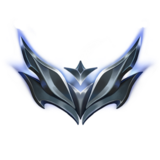

League of Legends'taki (LoL) rank sistemi, oyuncuların yetenek seviyelerine göre sıralanmasını sağlayan dereceli (ranked) mod içinde kullanılan bir sıralama sistemidir. Bu sistem, oyuncuların bireysel ve takım performanslarına bağlı olarak belirli aşamalara yerleşmesini sağlar.
İki Ayrı Rank ModuTekli / Çiftli: Bireysel olarak veya bir arkadaşla oynanabilen klasik dereceli sistemdir.
Esnek: Beş kişiye kadar arkadaş grubu ile oynanabilen farklı bir sıralama sistemidir.
Iron: En düşük seviye, yeni başlayan oyuncular burada yer alır.

Bronze: Orta seviye altındaki oyuncular için bir aşamadır.

Silver: Ortalama oyuncuların bulunduğu seviyedir.
Gold: İyi oynayan oyuncuların bulunduğu ve birçok ödülün kilidinin açıldığı aşamadır.

Platinum: Deneyimli ve stratejik oyuncuların bulunduğu seviyedir.

Emerald: 2023 yılında eklenen bu yeni kademe, Elmas ve Platin arasındaki oyuncular içindir.
Diamond: Yüksek beceri seviyesine sahip oyuncuların yer aldığı aşamadır.
Master: Profesyonel oyunculara yakın seviyede olanların bulunduğu kademe.

Grandmaster: En iyi oyuncuların olduğu yüksek seviye ligidir.

Challenger: Oyunun en üst seviyesi olup, dünya çapında en iyi oyuncular buraya ulaşır.

Oyuncular, dereceli maçları kazandıkça LP kazanır, kaybettiklerinde ise kaybeder.
100 LP'ye ulaşıldığında, bir üst kademeye geçmek için terfi serisi oynanır.
Ustalık, Büyük Usta ve Şampiyonluk aşamalarında LP doğrudan sıralamayı belirler.